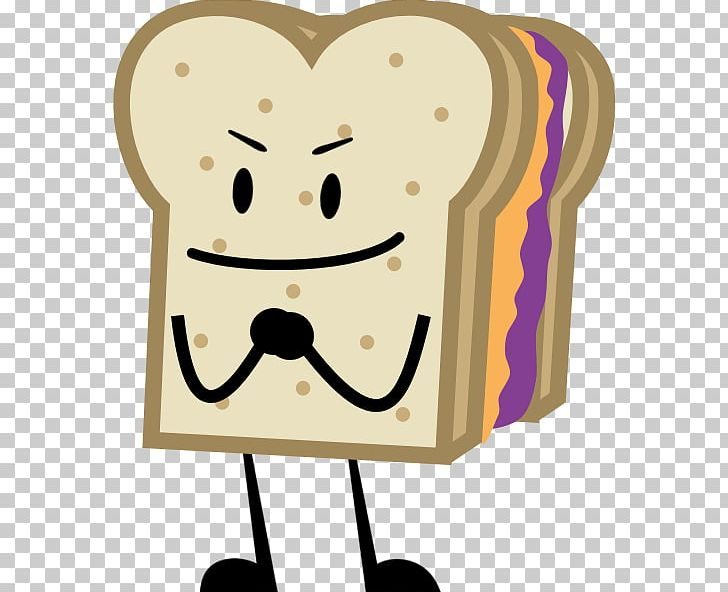

HOW TO MAKE A PA PA PA PEANUT BUTTER AND JELLY!

This food tastes great! You will want to make this simply because it is good to the taste. Not to mention, the peanut butter and jelly combination has great macros and is attractive to the eye!
You will nead...
- peanut butter
- jelly
- bread
- plate
- Knife or spoon or both
Steps
- Slap the peanut butter and jelly on faces of seperate slices of bread
- smash them together (the peanut butter should touch the jelly